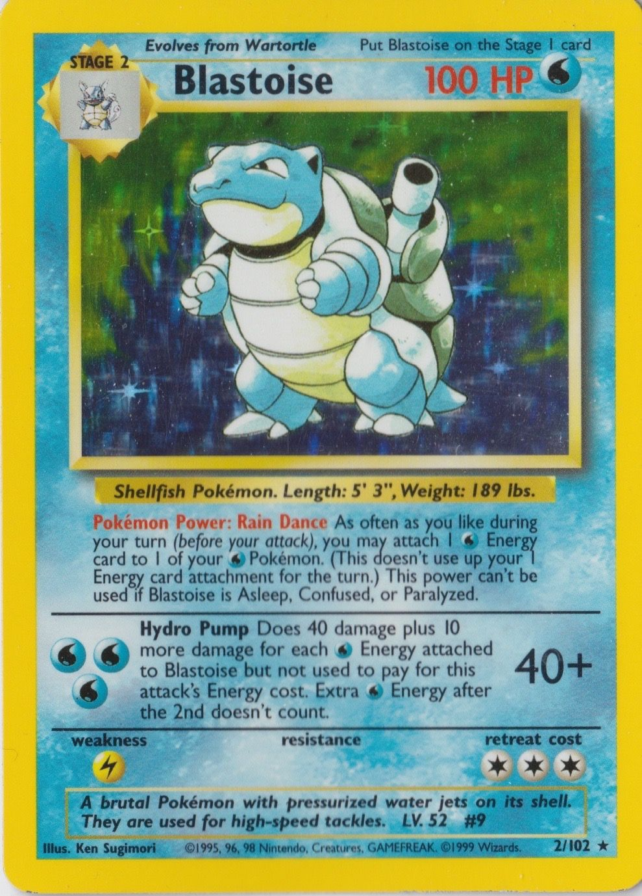

Rain Dance, a deck where Blastoise shoots a powerful attack with loads of water energy
deck list :
find it on my exel deck list, it lookes way better and you get more decks
click >>hear<< to download

so how you play, you search your deck getting aload of water energy, and use hydro pump to do loads of damage
to quote the jklaz "With 70 HP and no Weakness, Articuno was the partner Blastoise
always wanted. Articuno’s Freeze Dry sets up any Pokémon with 80 HP
or less for a two-hit KO, while Blastoise’s Rain Dance provides plenty of
extra Energy for Super Energy Removal & Super Potion."
- the jklaz on the fossil rain-maker deck on his website